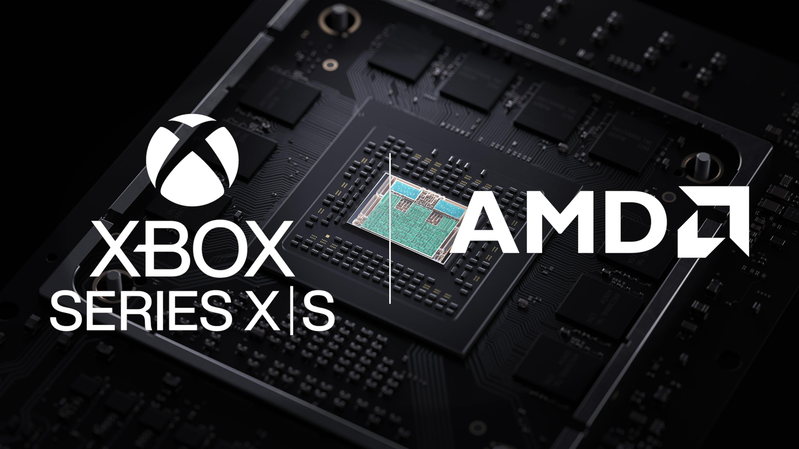

AMD официально объявила: FSR Upscaling 4.1 — технология масштабирования на основе машинного обучения — выходит за пределы свежих Radeon RX 9000. Сегодня она доступна на RX 6000-й серии, Ryzen AI Max 300/400, Ryzen AI 9 300/400 и части Ryzen Z2 через драйвер Adrenalin 26.10.1.RX 7000 получит обновление позже, владельцы Xbox Series X и S — «совсем скоро», точную дату AMD и Microsoft не называют.
FSR 4.1 работает более чем в 300 поддерживаемых играх — от Cyberpunk 2077 до Battlefield 6 и Assassin's Creed Shadows. Примечательно родословная: совсем недавно Sony и AMD договорились о QSSR для базовой PS5 (плод совместного Project Amethyst), и теперь AMD везёт ту же школу ML-апскейла в свою экосистему. «Мы не просто портировали — вернулись в модель, настроили и оптимизировали код», — говорит Джек Хуинь, старший вице-президент AMD. Для слабой Xbox Series S обновление обещает стать самым ощутимым апгрейдом со времён запуска консоли.
Российский аналог этой же ниши — дискретные карты ИРИС от 1С:Ирис (ГК 1С) на GPU Intel Arc: у них собственный апскейл «Радуга», и компания официально заявляла о планах поддержки FSR. Так что владельцу отечественной видеокарты про нейросетевое масштабирование слышно не впервые — вопрос теперь в темпе обновлений драйверов.